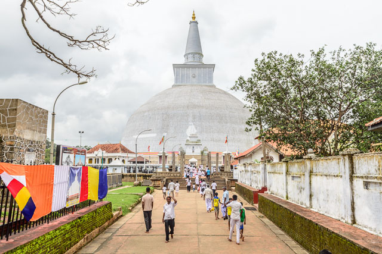
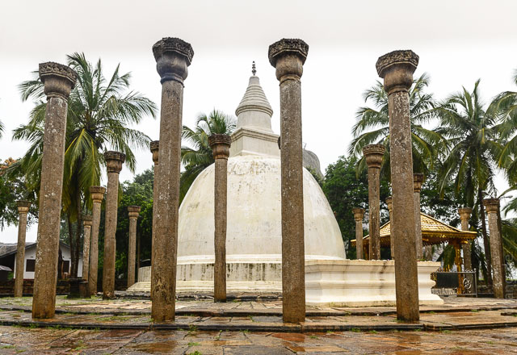
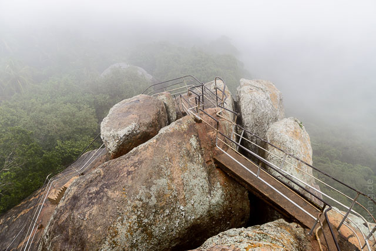

Mit einem Bummelzug haben wir es in knapp sieben Stunden in die unaussprechliche Stadt Anuradhapura geschafft. Die Wagons waren uralt aber eigentlich recht bequem – wenn man denn einen Sitzplatz erobert hat. Durch die offenen Fenster werden die Sitze schon von außen mit Taschen und Tüten belegt. Obwohl wir relativ weit in den Norden gefahren sind, verlief die Strecke durchgehend im Flachland, so dass es aus dem Fenster eigentlich nur zwei Ansichten gab: Einfache Häuser (von Alutghama bis hinter Colombo) oder Palmen und Reis (der Rest der Strecke).
Anuradhapura ist sehr weitläufig, hat aber nicht viel mehr zu bieten als die typischen Straßendörfer. Von unserem Guesthouse Lake View kann man den See leider nicht sehen, aber die Moskitos lassen die unmittelbare Nähe erahnen. Der sehr nette, weitestgehend zahnlose Kellner kümmert sich um alles. So auch um Fahrräder, mit denen wir die Tempel der Umgebung erkunden konnten.
Die Stadt war das wichtigste kulturelle Zentrum, als der Buddhismus nach Sri Lanka kam. Von der Klostermetropole sind weitläufige Ruinen übrig geblieben, die aber fast nur aus kniehohen Mauerresten bestehen. Das erinnert an die unspannenden Ruinen von Sarnath in Indien. Schön sind aber die großen Dagobas (Stupas) – gigantische Halbkugeln, die teils gemauert, teils weißverputzt, von Gläubigen und Touristen umrundet werden. Von der großen Dagoba führt eine Achse zum großen Bodhi-Baum. Das ist natürlich ein direkter Ableger des Baums, unter dem Buddha erleuchtet wurde. Der Baum ist x-mal eingemauert und so heilig, dass die Opfergaben nicht direkt abgelegt werden können, sondern Mönchen übergeben werden, die Zutritt zur innersten Terrasse haben.



Bei dem schönen Wetter lässt sich die Radtour gut aushalten, so dass wir jedes alte Mauerwerk der Umgebung abgeklappert haben. Westlich der Stadt gibt es noch einen alten Tempel, der um einen Felsen herum gebaut ist. Eine Treppe führt hinauf, von wo aus man einen schönen Blick über den See hat.


Am nächsten Tag hat der Regen eingesetzt, der leider ziemlich lange anhalten sollte. Wir haben alles wasserdicht verpackt und sind nach Mihintale gefahren. Dort gab es eine Tempelanlage auf einem Berg. Wieder viele Mauerreste. Aber die langen Treppen, die den Berg hinauf führen, sind noch da. Durch den Regen haben sie sich in kleine Katarakte verwandelt. Der Aufstieg durch das warme Wasser war eigentlich sehr angenehm. Oben gibt es einen glitschigen, steilen Felsen, in den ein paar Stufen geschlagen sind. Trotzdem hangeln sich Greise, Familien mit Kleinkindern und überhaupt jeder dort hoch. Die Wolken hingen so tief, dass man die 100m weiter liegende Dagoba nicht sehen konnte. Ein Abzweig von der Treppe führt in den Wald hinein und über dutzende weitere Treppen zu einer verwitterten Dagoba. Dort steht man auf einem fast senkrecht abfallenden Felsen und hat einen tollen Blick aufs Umland, das im Moment ziemlich viele Seen aufweist, die da vermutlich nicht hingehören.
 